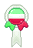
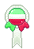
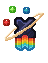
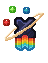
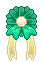
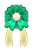
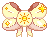
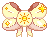
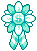
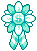

lord of the forest
Sylvie is the vessel of the God of Trees—a Dendro elemental lifeform adopted as a god by the people of Sumeru—that went by the name of Foras. Disillusioned with the aspect of godhood upon their revival from a death suffered during the Archon War, they have integrated into human life and have been travelling all over Teyvat for the last 1,500 years.
Many would call them loud in different ways—in voice, energy, and their personality in general; one would not think they were anything but an adventurer that was way, way too enthusiastic and reckless for their own good. The years Sylvie has been alive have put them through a number of events and situations that have shaped their view of their world.


lord of the forest
Sylvie is the vessel of the God of Trees—a Dendro elemental lifeform adopted as a god by the people of Sumeru—that went by the name of Foras. Disillusioned with the aspect of godhood upon their revival from a death suffered during the Archon War, they have integrated into human life and have been travelling all over Teyvat for the last 1,500 years.
Many would call them loud in different ways—in voice, energy, and their personality in general; one would not think they were anything but an adventurer that was way, way too enthusiastic and reckless for their own good. The years Sylvie has been alive have put them through a number of events and situations that have shaped their view of their world.


Character
Likes
- eating/trying new foods
- fashion/clothing
- doing dumb shit
- fun competitions
- new adventures
Dislikes
- cold sensations
- tangled hair
- wet sensations
- being called old
- being ignored
Details
- it is rare for sylvie to discuss much with others when it comes to their own insecurity; after years of being a god-like figure, it's been integrated into their brain that 'gods' do not show weakness. only zhongli and a few others have seen their more vulnerable side.
- terribly competitive with the right people or circumstances; do not play TCG against them, they are someone who is not shameless to make absolutely disgusting decks to fight against.
- sylvie, although acting foolish and silly, is quick-witted and able to analyze situations easily; this simple, welcoming personality is not a ruse as they are truthful with it, but it does help to disarm people.
- ... sometimes they truly are stupid though and do say some dumb, unfiltered stuff.
Story

Intro: Pre-war (3500+ years before present)
- Foras is the name of a primordial elemental being born from an irminsul branch that was planted in Sumeru's forests.
- That tree was worshipped in old Sumeru for many generations before their birth and well before the archon wars began spreading out; upon Sylvie's 'birth' from it, they were eventually adopted as their guardian to a large cluster of villages.
- Their feral form is their natural-born form, reaching 13 feet in height and 26 in length, though when born they were the size of a newborn fawn.
- Although seen as the god of trees due to how they came into the world, their power extends to the surrounding flora; with their powers, they could create strips of land with fertile soil that would be used to grow crops outside the wetness of the surrounding forest. They were often asked for blessings for harvests to be bountiful, or for natural medicines to work on ailments and improving health.
- Their main source of trade back then was focused on highly used crops (barley, etc), foraged items, wood, selling of medicinal herbs and spices, and fabric exchange (in either crafted outfits or raw materials), as it was their primary 'currency' ... and mora hadn't come to exist back then as a universal currency.
- During the dry season when harvests were quieter, they went into 'hibernation', though thhis was mostly a guise to travel outside Sumeru and explore the world that was abundant with different gods. It was during this time they met other gods and beings such as Morax, Azhdaha, Marchosius, Osial, Guizhong, Havria, and more.
During the Archon Wars (2500 years — 1500 years before present)
- They were present for the beginning of the archon wars when it began to bleed over the continent of Sumeru, but in an attempt to get help from Andrius to shelter the people under their protection, they found themselves in the snow-covered Mondstadt after an attempt to contact Morax went unanswered.
- Unfortunately, before having a chance to get to Andrius, the interruption of another god resulted in them having taken a fatal hit that nearly bisected them, injured from having killed the other god violently.
- In the short moments before losing consciousness, they buried themselves underground using the roots of the hiberating trees, cocooning themselves underneath the spot where the Windrise tree would soon come to form through Vanessa.
- This injury caused them to essentially die, but this is when their regeneration kicked in for the very first time; due to that, the time it took for them to revive and recover lasted around 1000 years, waking up 500 years after the archon wars were over (so 1.5k years before the present time).
- Due to them being "dead" they emitted no elemental energy and remained practically invisible over their recovery.
- The general belief was that they had died due to the war after abandoning the people they protected; the grand tree they were born from withered alongside them.
Post-war (1500 — 500 years before present)
- After waking up, they ended up chasing down Rex Lapis to find out more information about the current timeline, him being closest god to where they woke up and one of the ones they knew from back then. Foras ended up interrupting a Rite of Descension on purpose to get his attention.
- They went through different stages of grief and guilt at finding out so many gods were killed or chased off due to being seen as "evil" for not agreeing with the new rule, hearing the belief that they had abandoned their people, seeing that none of their history remined ... this feeling of helplessness and anger eventually made them denounce their own godhood and want to just live as someone else; they had no more identity left after their own death.
- After learning of the circumstances of the world, they decided to turn to traveling to learn about the new world and how to be human and to forge a new identity, finding a desire to want to integrate among them and learn more about living. This is where they took on the name Sylvatica, which was eventually simplified to Sylvie.
- During this time, they began to befriend Barbatos as well when the chance was provided, as well as relearning their friendship with Rex Lapis due to the vast difference of the one they knew, and the one that existed now.
- With the other archons, those who did not react with hostility, were ones they attempted to befriend as well to at least maintain a connection to other gods.
- For the most part their time was busy with exploring and learning the new world that existed now, living among humans and learning their habits.
Disappearance (500 years before present)
- The fall of Khaenri'ah though caused a large rift between them and whichever of the seven they had befriended across the years. The pure anger they felt towards Celestia drove them to disappear for the next 500 years off of Teyvat and into the Dark Sea.

Present
- They only resurfaced at the notion of Rex Lapis's death a week after the situation, finding their way back to Liyue out of worry and disbelief of the incident occuring (with massive relief and anger to figure out it was just a staging).
- For the time, they are mostly observing and back to wandering around the nations and doing commissions on the side. They found interest in the new developments and the traveller's goal to find their sibling; the drive to push and topple the system put in by Celestia also rests at the back of their mind.
- During the lock-down of Inazuma, they have snuck to the island, covertly aiding the resistance in their actions against baal either through supply sabotage, damaging important structures, or offering herbs and plants that either aid in healing the members or hinder the Shogun's army.
- With the restoration of Inazuma's peace (tentatively), they have returned back to Liyue in preparations to make their way to Sumeru and see what is happening in the lands they once called home.
- With their arrival to Sumeru and with meeting the traveller on the road, they get tied up in the dream loop that the city of Sumeru has fallen under, quietly working alongside Kusanali and the traveller to unveil the dream-like mystery that haunts the city.
- Something haunts their thoughts; the changes to Irminsul done by Rukkahdevata and Wanderer are ones that they feel, though they do not know why the sensation is present or what has changed. To some degree, it drives them up the wall until they have to come to terms that their memories have been altered.
- An injury sustained in the Chasm led them to be poisoned with the abyss as they killed one being threatening to spill out of the Chasm and into Liyue, leaving them bedridden for a month as the poison was purged slowly out of their system.
- Their visit to Fontaine finds them with a deep kinship and protectiveness over Furina, especially after the circumtances of her trial; Sylvie is present during it, and seeing the trial and how people react to her not being a true 'god' leads them to a deep, despairing pit as it is reminiscent of their own fears. The ongoing prophecized flood occupies their mind as they join the efforts to help.
- ... and like Fontaine, Sylvie finds themselves participating in the war ongoing in Natlan, though wary as the Abyss permeates and oozes everywhere; their wound from the Chasm aches oh so deeply still, even if has been removed from their body. Seeing people who died rising up once more ... something sits weirdly in them at the sight, but it is not their place to argue with those coming back (even if they know all too well the trauma that comes with dying and coming back).
Moodboard
Design

Design sheet, still needs to be updated for their pronouns + flags
- They tend to default to a simple outfit: low-cut frilly shirt, waist-high black pants, and thigh-high brown boots.
- Sylvie enjoys trying on various clothing in general, and finds appeal in more revealing clothing.
- Dresses and make-up are not off the table, and they actively enjoy wearing both.
Design Notes
- Their eyebrows are green, I just tend to default to drawing them black; artists can do either or!
- Their shirt opening can be simplified to not have any strings.
- Their pupils act like a cat's, being able to dilate or turn into slits; by default I tend to draw them slitted.
- They have sharp, canine-like teeth.
- Their vision is not a necessity to draw if need be.
- The fern they wear is only on the left side of their head.
- Major pectoralis is the body reference they're based off.
- Their full design sheet is here on Toyhouse, including additional design notes + 3D turnarounds.
Trivia
- Sylvie was made on March 14, 2021.
- Sylvie cannot handle spice to save their life, despite a deep love of spicy food in general; they faked their spicy intolerance so hard it became real.
- Their ears are quite sensitive to touch, it may cause them to protectively cover their ears if anyone touches them or breathes close to them.
- They can eat everything for the most part because their body can digest practically anything (minus anything originating from the void/abyss realm). even so, they are a massive foodie and prefer actual food.
- They tend to view grooming (brushing one's hair, etc) as a bonding, affectionate activity, so friends may find Sylvie working on their hair to fix it (or licking it if they're in their deer form).
- Sylvie has no true human body; they have no organs inside of them and they fake their blood being 'red', in reality, they are just a human bag wrapped around pure dendro essence (thus their true 'blood' is green).
Relationships


Relationships with Canon Characters


Ribbons and Badges


 



 



 



 



 



Image Gallery